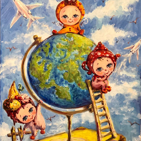
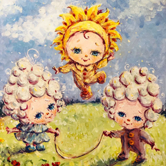
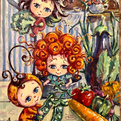
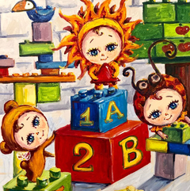

Що таке Гуманна педагогіка?
Гуманна Педагогіка - це теорія та творча практика виховання особистості в Дитині. Гуманні педагоги вірять, що кожна Дитина - це явище; його можливості безмежні і він несе у собі певну місію для людства.
Основні ідеї Гуманної Педагогіки:
- Виховання Дитини дорослим починається з виховання самого себе
- Духовна спільність вихователя та Дитини
- Співробітництво та співтворчість між вихователем, Дитиною та батьками
- Безпосередність та сердечність
- Турбота про облагородження душі Дитини
- Надання права вибору
- Керівництво принципом терпіння у відносинах з дітьми
Основні аксіоми Гуманної Педагогіки:
- Кохання виховується коханням
- Доброта виховується добротою
- Особистість виховується особистістю
Головна мета Гуманної Педагогіки:
Виховання шляхетності та великодушності у підростаючому поколінні. Процес виховання ґрунтується на головних потребах Дитини: у розвитку, дорослішанні та свободі.
Наша історія
Історія появи в Одесі, дитячого садка Гуманної Педогогіки, тісно пов'язана з особистою історією сім'ї Євгенії та Олександра Грабіліних, фундаторів «Міста Сонця». Виховання своїх трьох дітей призвело до знайомства з ідеями Гуманної Педагогіки, а в майбутньому і з сім'єю Амонашвілі. Олександр та Євгенія стали учнями Шалви Олександровича та закінчили Вищу Школу Амонашвілі.
Занурення у духовне середовище допомогло усвідомити, що такі знання мають бути суттю педагогічного процесу у школах, та й у дитячих садках, або навіть в утробі матері. Саме така мета була поставлена у жовтні 2019р. на семінарі Ш. А. Амонашвілі «Мистецтво дошкільного виховання», куди було запрошено представників усіх дошкільних закладів м. Одеси. Очевидно, що реалізувати Гуманну Педагогіку в чистому вигляді, в педагогічному процесі, можливо лише, починаючи з білого аркуша. Саме тому Шалва Олександрович дав благословення на відкриття дитячого садка у нашому місті, тим людям, які щиро вірять у її силу та будують своє життя на основі духовно-моральних законів.
Для батьків !
В основі Гуманної Педагогіки лежить трикутник співпраці: педагог-дитина-батько. Наше спільне завдання допомогти дітям знайти свій шлях у цьому житті та «розправивши крила», реалізувати свої безмежні можливості. Ми запрошуємо наших батьків на регулярні батьківські зустрічі, де ми порушуємо нагальні питання, пов'язані із самопізнанням та вихованням, разом шукаємо відповіді.
Якщо Ви відчуваєте, що основи Гуманної педагогіки відгукуються в серці і Ви хочете, щоб вони стали спосібом життя Вашої родини, приєднуйтесь до нашого кола однодумців.
Як ми пізнаємо світ?
Педагоги в дитячому садку "Місто Сонця" допомагають дітям пізнавати світ через усі межі освітнього процесу: розвиток мови, занурення в іноземне мовне середовище, побудова логіко-математичного мислення, захоплення творчим процесом, участь у іграх та спілкування не лише з однолітками, та й з дітками інших вікових груп.
Як ми проводимо свій день
У дитячому садку «Місто Сонця» вся надія реалізацію ідей Гуманної Педагогіки доручається особистість вихователя і потім на методичну систему. Наші діти виховуються образами, які ми, дорослі, їм пропонуємо протягом дня. Вихователі відводять велику кількість часу для індивідуальної бесіди з кожною Дитиною. Саме так зароджується духовна спільність між дорослим та Дитиною, що дає згодом свої плоди та в освітній роботі. Ключом пізнавального процесу Гуманна Педагогіка приймає гру.
«Гра - це іскра, що запалює вогник зацікавленості та допитливості» (В.А. Сухомлинський)
Що ми їмо?
Харчуванню у нашому саду приділяється особлива увага. Ми створили сучасний кухонний зал для автономного, 5-разового харчування діток протягом дня. Щодня діти отримують повноцінний раціон, з урахуванням усіх потреб організму, що росте. У дітей завжди у доступі чиста питна вода та обов'язкова фруктова пауза за сезоном. Ми враховуємо стан здоров'я кожного малюка, тому в разі потреби індивідуально надаємо альтернативне меню. Для наших дітей готує кухар, вкладаючи в кожну порцію частинку своєї доброї душі та гарного настрою!
Щодня ми проводимо ігри:
- Колективні для виховання співробітництва та взаєморозуміння, пошуку компромісу та підтримки один одного.
- Розвиваючі на кмітливість, логіку, ерудицію, розважливість
- Навчальні з використанням дидактичного матеріалу на базі програми «Упевнений старт», яка рекомендована Міністерством Освіти України, для дітей віком від 3 до 6 років
Наш день складається з радості пізнання, радості дружби та гри. Зустрічаємо дітей з 8:00, проводжаємо о 19:00
Про Місто Сонця

Що таке Гуманна педагогіка?

Наша історія

Документи

Для батьків
м. Одеса, вул. Лядова 12 (кут Кітобійний)
Групи
ясла
2-3 рочки (до 12 осіб)
молодша
3-4 роки (до 14 осіб)
середня
4-5 років (до 14 осіб)
старша
5-6 років (до 16 осіб)
- 
Як ми пізнаємо світ?
- 
Як ми проводимо свій день?
- 
Що ми їмо?
- 
Наші ігри
Відгуки